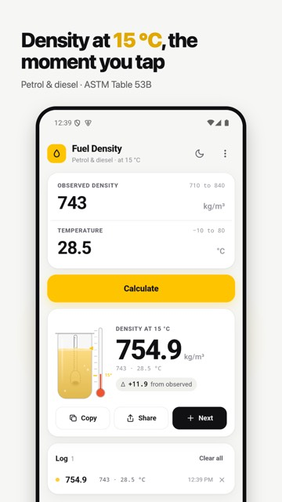

Wiz Fuel Density: density at 15°C calculator
Enter the density you read on the hydrometer and the sample temperature, and get the density at 15°C without searching a printed density chart. Built for petrol pump dealers, managers and staff, and for depot, lab and transport teams.
Get it on Google Play हिंदी में पढ़ें


What it does
- Density at 15°C from observed density (710 to 840 kg/m³) and temperature (−10 to 80°C).
- Based on ASTM D1250 Table 53B, for petrol (MS) and diesel (HSD).
- Shows the change from the observed reading and marks values the source table lists as extrapolated.
- Fast entry: a 3-digit density jumps to temperature. Next keeps the temperature for the next sample.
- Log of the last 50 calculations on your phone. Copy or share a reading for WhatsApp or your density register.
- Works without internet. No account, no login.
Questions
How do I convert observed density to density at 15°C?
Type the density you read on the hydrometer, then the sample temperature, and tap Calculate. The app looks up the density at 15°C in the bundled table and shows how much it changed from the observed value.
What density and temperature range is covered?
Observed density from 710 to 840 kg/m³ and temperature from −10 to 80°C, which covers petrol and diesel.
Which table does it use?
ASTM D1250 Table 53B. Values the source table lists as extrapolated are marked. Always confirm against your approved table before writing a value in official records.
Does it work without internet?
Yes. The full table is inside the app, and the calculator page cannot use the network at all.
Are my readings saved?
The last 50 calculations stay on your phone. Tap one to load it again, delete one, or clear the log. With Android backup on, they also come back after a reinstall.
More from Wiz Labs
- Wiz Dip Charts: tank dip chart calculator, dip in cm to litres.
- Wiz Mock GPS: mock location for app testing.